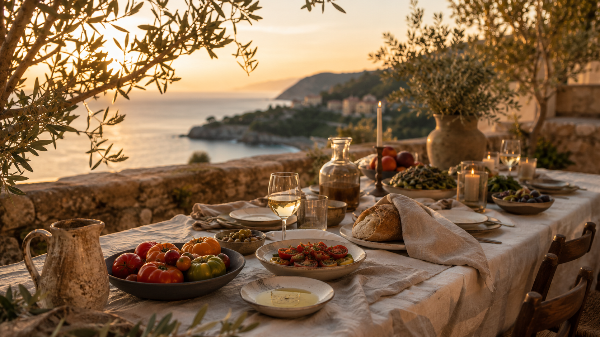
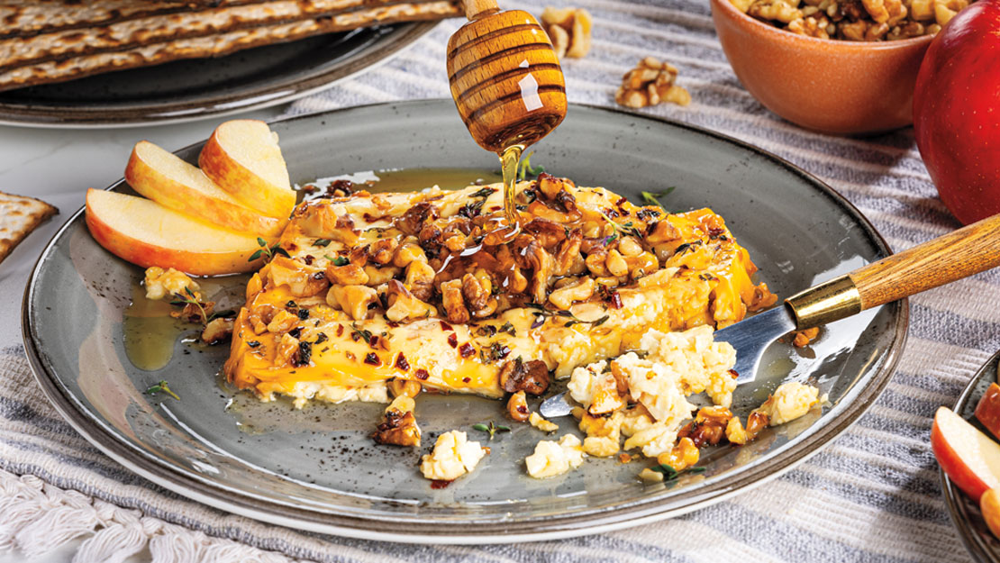
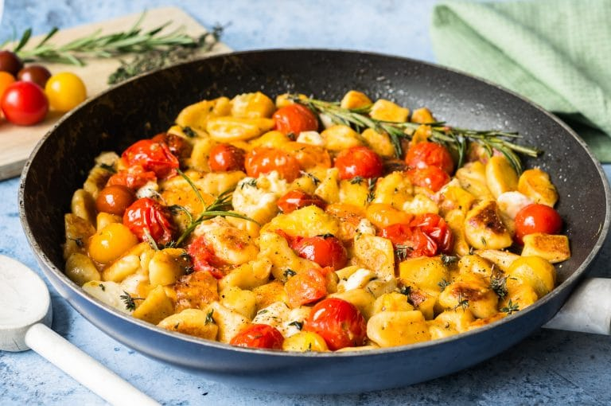

Traditional Mediterranean recipes, served with a modern twist.
We are a family-owned restaurant bringing the fresh, vibrant flavors
of Italian, Greek, and Turkish culture straight to your table. Our
menu is intentionally short, focusing on quality and rotating
seasonally to ensure every ingredient is served at its peak. Here,
tradition meets simplicity.

Seared Feta with Honey & Thyme
A Greek island classic reimagined. We sear premium feta cheese until
it is warm and soft on the inside with a crisp, golden crust.
Finished with a drizzle of local wildflower honey, walnuts and fresh
thyme, it balances savory and sweet flavors in every bite.

Cherry Tomato Confit Gnocchi
Light, pillow-soft potato gnocchi made fresh daily in our kitchen.
We toss the pasta in a rustic sauce of cherry tomatoes slow-roasted
in olive oil and garlic, completed with genuine parmesan and basil
picked from our own garden.
Orange & Pistachio Semolina Cake
Inspired by Turkish baking traditions, this semolina cake is soaked
in a light orange and spice syrup right out of the oven to keep it
incredibly moist. It is served with a dollop of strained yogurt and
toasted pistachios for a perfect crunch.